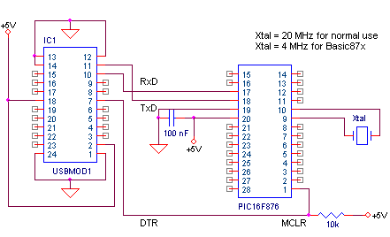
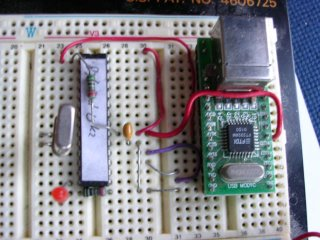
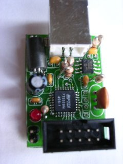

januari 2005
Examples Setup
Introduction
On the next pages a number of basic PIC programs are presented, to help newbies getting started with PICs. The examples are all based on the same hardware configuration and are written in a number of different languages. All the languages are Pascal/Basic-like and are freeware or have a lite version that can be used as freeware for personal use. The used PIC-languages are JAL, JAL++, PICbsc, XCSB, Basic87x. Each example will show 1 basic action with the PIC. For all examples also the hex-files are included, so you can test your circuit without compiling anything. In the examples the PIC 16F876 is used, which for all the examples is equivalent with all the other 16F87x (873,874,877).
For all the examples, the same test setup is used:
16F876, @20MHz (for Basic87x a 4MHz xtal is used)
USBMOD1
winXP-pro + sp1
JALcc v1.0 Shane Tolmies bootloader at 19k2 Baud, v....
USB-Boot-uploader v ... (VCP version)
JAL v4.59
PICbsc v....
XCSB v....
Basic87x v...
Getting started
Getting started from scratch is one of the most difficult parts you'll encounter when working with PICs. You'll have to combine a lot of new information / things and it will only work as each indivual element in the chain is working correctly. But even before that, you've to decide which optimal starters package you're going to use. Asking 5 people, what's the best, you'll get 5 different answers. The best answer I heard (free translated from Wouter van Ooijen) was:
"use the solution your collegue or neighboor or nice-newsgroup is using"
And this yields for the choice of the type micro-controler, the programming language, the programmer, the software development environement and the experimental hardware setup. So here a few links to good starting points:
Bert van Dam his site, look under "Level Zero / Getting Started / ..."
Lonely Nights projects and observations in microcontroller electronics
Bert uses Windows, Quick Basic, PIC 16F877, JAL, WISP628, JALcc, PC-scope, JALss. This is really the first page you should visit if you want to start with PIC and JAL.
Wouter van Ooijen his site, look under "PICmicro / Start with PICs / ..."
Wouter is the creator of JAL and has an webshop devoted to PICs and related components, also a number of interesting PIC kits and a number of programming tools.
Vasile Surducan has written book on PICs and JAL, but unfortunatly it's in Rumanian. On his website are some pages for starters.
PIC16F84, PIC16F628 and PIC16F877 application
And of course you can find a lot of information and links on my site (not dedicated to newbies).
PIC JAL JALcc JALss Lego Mindstorms
Hardware Setup
For development, even for large projects or small PICs, I always use a breadboard with a 16F876 (with Shane Tolmies bootloader) and a USB-module. In my opinion this is the most simple, flexible and easy-to-use hardware development environement. The use of an USB module has some great advantages: you don't need a power supply and from most IDEs you can go from editor to serial debugging with just one keypress. The reset pin of the PIC is also controlled through the USB module by the PC. This circuit is also ideal if you want to play with Basic87x. Instead of the USB-module, you could also use a MAX232 or MAX233 and interface to the RS232-port, but then you'll also need a power supply.
|
 |
 |
For experimental setup in general there's no need to place capacitors around the Crystal, but in a final design you must add them. Also note the small "needless" jumpers next to the Crystal, just for easy loacting the connection when you need to change the Crystal.
|
The USB-module in the picture above is the USBMOD1 from Dontronics. It's a complete module with USB connector and fits nicely into the breadboard. This module doesn't contain a EEprom, so you can only attach 1 device to your PC, and draw a maximum current of 200 mA.
Wouter also sells some similar USB modules (as a kit), one of them is shown on the right. The modules of Wouter have some advantages: - the module contains an EEprom, so you're able to use the advanced D2xx-drivers, so you can conect more than 1 module to your PC, and you can draw the maximum of 500 mA current. - Wouter also has a programming service, so you can order a PIC with a bootloader The disadvantage of the module on the right is, that it doesn't fit directly on a breadboard. |
 |
Software Setup
There are a number of free IDEs (Integrated Development Environement) available for Windows, but all compilers can also be used from the DOS-commandline. Some of the languages are platform independant and will therefor also run under Linux or MAC.
Ofcourse I use JALcc (under winXP-pro), because it supports more then only the JAL-language.